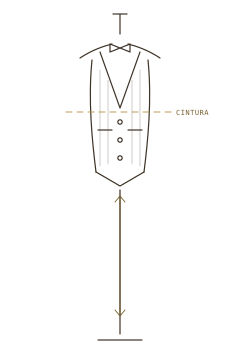

A peça certa começa na primeira prova.

Atelier de trajes festivos · sob medida e ajustes
Vestidos de noiva e madrinha, trajes de noivo e padrinho, cortados e ajustados no seu corpo, prova a prova.
01 — O ofício
Não vendemos vestidos prontos. Cortamos o molde no seu corpo, alinhavamos, provamos e ajustamos, até a peça parecer que sempre foi sua.
3
provas, em média
6–14
semanas do molde ao arremate
1
costureira acompanha você do início ao fim

02 — Do molde ao arremate
Quatro encontros, uma peça.

- 01
Conversa
Referências, data, orçamento. Tiramos as primeiras medidas.
- 02
Molde em morim
Cortamos uma toile em algodão cru para testar o corte antes do tecido final.
- 03
Provas
Ajustes de caimento, cintura e barra, com os sapatos do dia.
- 04
Arremate
Acabamentos à mão. A peça sai passada, embalada e pronta.
03 — Alfaiataria
Para quem vai ao altar de terno.
Ternos, smokings e coletes cortados no atelier, ou o terno que você já tem, ajustado como se tivesse sido feito para você.
Terno sob medida · 3 provas
Ajuste de terno pronto · 1–2 provas
Coletes, faixas e lenços · no tecido do traje


04 — Na arara
Peças que saíram do atelier este ano.
05 — Quem já provou
Na terceira prova eu chorei. Não pelo vestido, mas porque ele finalmente parecia comigo.
Ajustaram o terno do meu avô para o meu corpo. Mantiveram o forro original e trocaram só o que precisava.
Éramos cinco madrinhas, com cinco corpos diferentes. Cada uma recebeu o mesmo tom num corte que era seu.
06 — Agendamento
Agende sua primeira prova.
A primeira conversa dura cerca de uma hora e não tem custo. Você conhece o atelier, vê tecidos de perto e saímos com as primeiras medidas.
- Rua das Tecelãs, 120 · sala 3
- Terça a sábado, 10h às 19h
- Provas às quintas, sextas e sábados
07 — Perguntas
Antes da primeira prova.
Para vestido de noiva sob medida, de seis a oito meses antes da data. Trajes de noivo e vestidos de madrinha pedem de três a quatro meses. Ajustes em peças prontas, de três a seis semanas.
Em média, três: a do molde em morim, a do tecido alinhavado e a final, com os sapatos e a lingerie do dia. Se o corpo mudar no caminho, fazemos quantas forem necessárias.
Sim. Vestidos prontos, ternos de loja e peças de família. Avaliamos na primeira prova o que dá para ajustar sem perder o caimento original.
Depois da primeira conversa você recebe um orçamento por escrito, com tecido, número de provas e prazo. O valor só muda se o projeto mudar, e sempre com o seu aceite.
Pode, e recomendamos. O provador comporta até três acompanhantes com conforto. Na prova final, quem vai ajudar você a se vestir no dia deveria estar presente.